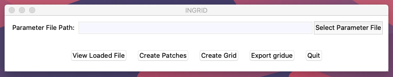

Launching the INGRID GUI¶
Now that INGRID has been installed on the machine, you can now begin utilizing INGRID in both GUI mode and as an importable module in Python. We will focus on using INGRID’s stand-alone GUI for now.
Warning
As a reminder, MacOS Mojave users must ensure the conda environment provided with the INGRID code has been installed. The following information assumes the user has done so (see Downloading and installing INGRID if unsure).
Launching from drivers¶
Although INGRID can be imported and launched from a Python session, we will first explain how to launch INGRID from the cloned repo.
We recommend new users launch INGRID in this way since the example_files we will explore in the tutorials come pre-set with relative paths to necessary data (eqdsk files, geometry files, etc…).
Note
Once the basic controls for setting paths to data withing the INGRID parameter file is understood, the user should be able to utilize the provided example-files without starting from the drivers directory.
To launch via the driver script, navigate into the cloned repository that we used to install INGRID. From here, navigate into the directory drivers and run the command:
python StartGUI.py
The INGRID GUI should now be visible, and ready for use.
Launching from a Python session¶
For users who know do not intend on using the YAML files within example_files, or those who understand how to set paths within the INGRID parameter file, you can launch the INGRID GUI from a Python prompt as follows:
>>> from INGRID import ingrid
>>> ingrid.QuickStart()
After executing the above commands, the INGRID GUI should be visible and ready for use (seen below).
Note
Upon launching the INGRID GUI, the user will be prompted with a plenty of terminal output. This is nothing to be alarmed of since this part the Ingrid class’ initialization. As we load parameter files and modify settings, we should see appropriate changes reflected in the terminal output.